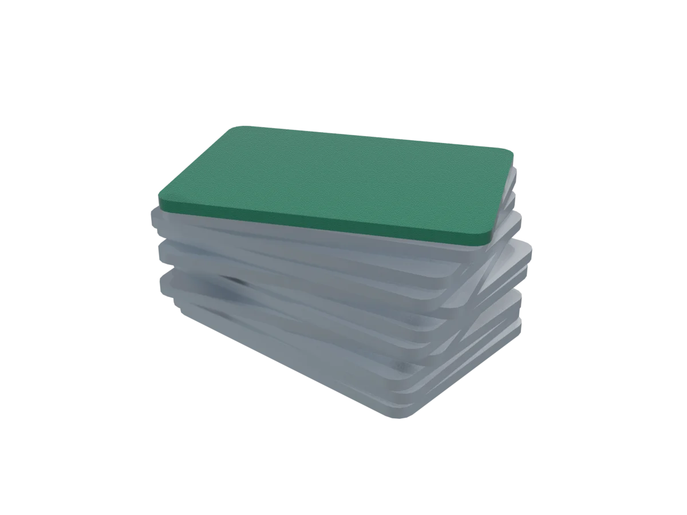
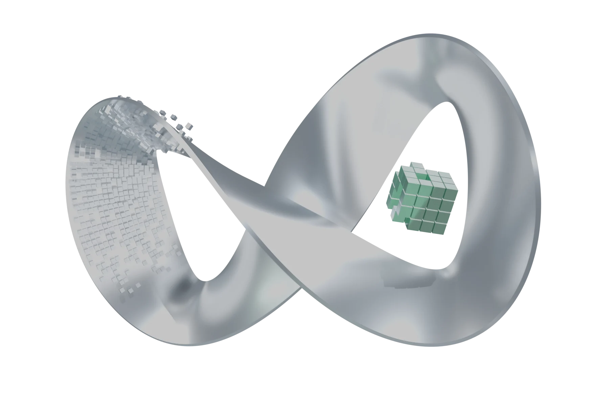
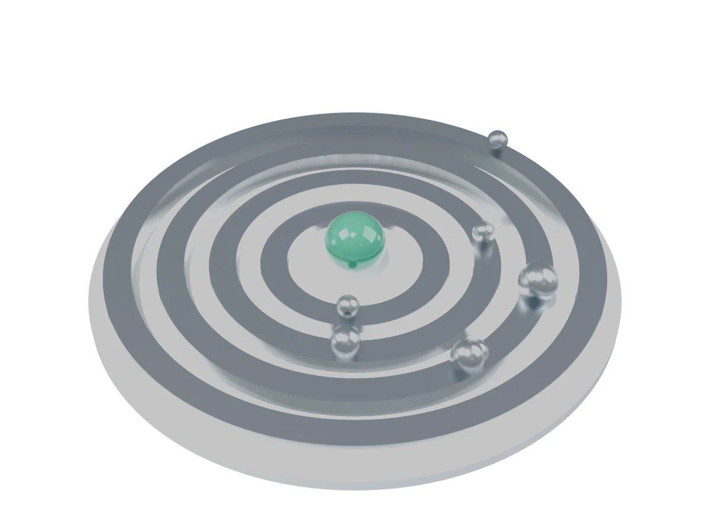
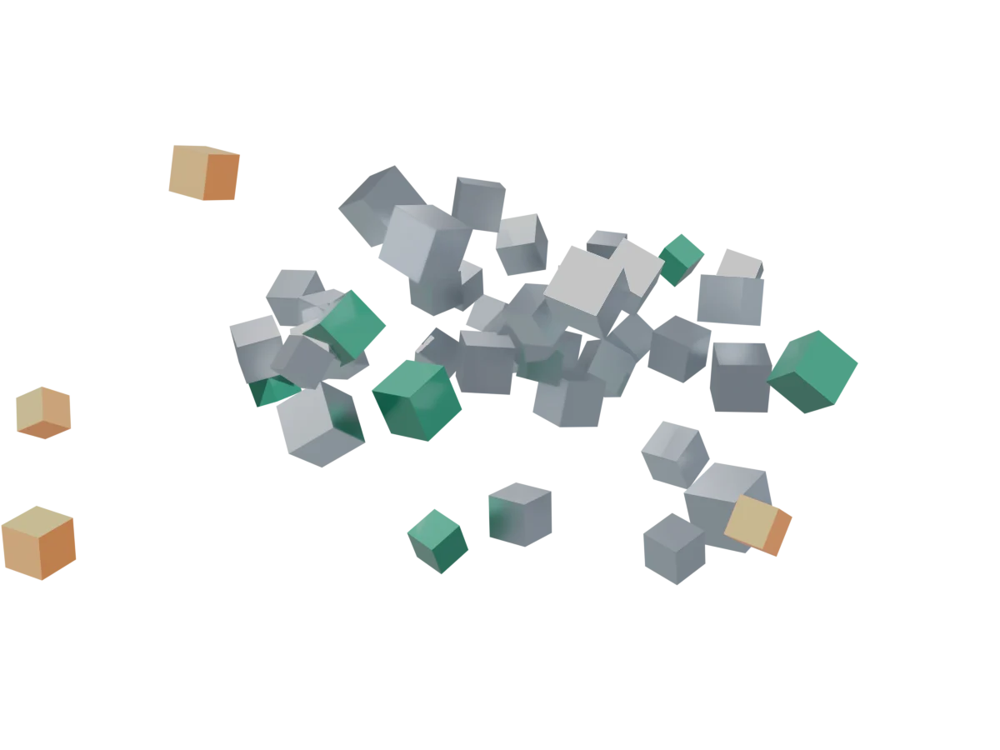
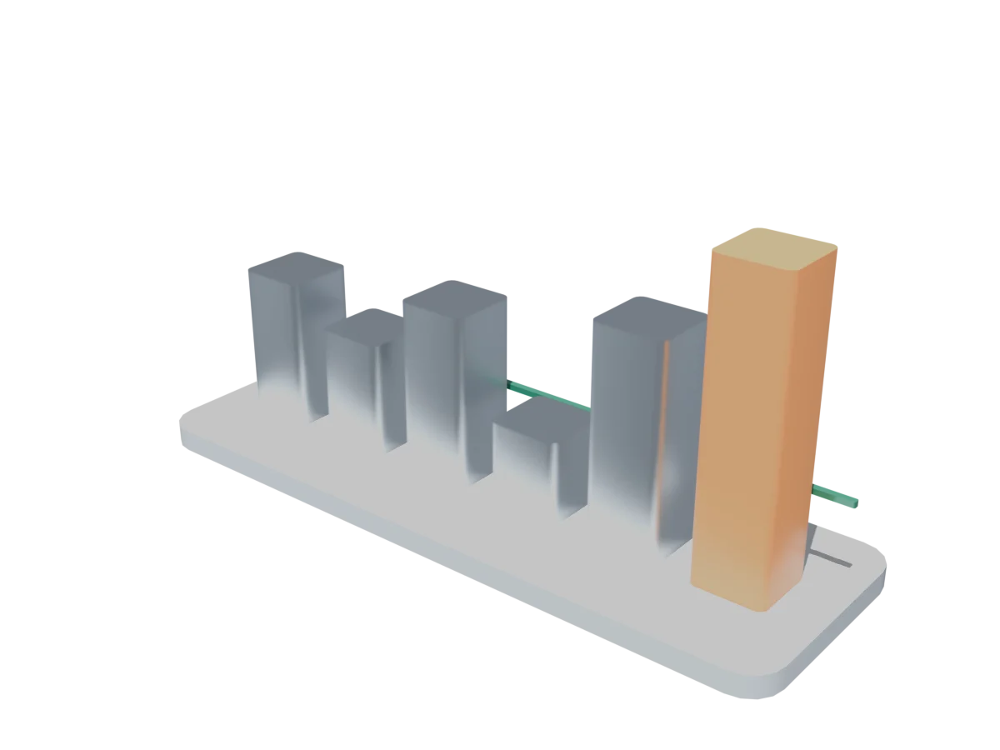

Take every real day since 2007, sort them worst to best, and read off the line. No assumptions, but it only knows what already happened.
Every investor asks it.
How bad could a bad day get?
A guide to market risk · no finance degree needed
Every investor asks it. This engine answers it with a number, then checks whether that number can be trusted.

Model built in Blender · rendered live with WebGL
A forecaster can't tell you whether it will rain at 3 pm tomorrow. They can say "a 1-in-100 chance of a storm worse than this." That's useful: you know whether to bring a coat.
Banks, pension funds and fund managers do the same with money. They hold a mix of things (shares, bonds, gold) called a portfolio. Each day it goes up or down. The question is not what will happen, but how bad can it plausibly get?
Value at Risk (VaR) is a line in the sand. Pick a confidence level, say 99%. VaR is the loss that, on 99 days out of 100, you should not exceed.
But VaR says nothing about the other 1 day. Expected Shortfall (ES) fills that gap: when the line is crossed, how bad is it on average?
Real numbers from this engine: equal-weight SPY, TLT, GLD, EEM, 4,987 trading days from January 2007 to October 2026. Loss on a single day, 99% confidence.

Take every real day since 2007, sort them worst to best, and read off the line. No assumptions, but it only knows what already happened.

Assume returns follow a bell curve, measure the average and spread, and the formula does the rest. Fast and elegant, and too optimistic about disasters.

Roll the dice thousands of times using a curve that allows rare shocks (Student-t), keeping the same correlations between assets.
The bell-curve method's tail loss (ES) comes out about a third lower than what history shows. Markets have more extreme days than a bell curve allows.
Backtesting replays history day by day. Each morning the model forecasts a 99% VaR using only the previous 250 days, then we see whether the loss broke the line. At 99%, that should happen about 1 day in 100.
If the model were perfect we would expect about 47 breaks.
VaR describes a normal-bad day. A stress test asks about a historic catastrophe: "if 2008 happened again to my portfolio today, what would I lose?"

2022 was the worst, and it wasn't even a "crash." Shares and bonds fell together, so the usual protection from mixing them vanished. That is why diversification can fail exactly when you need it.
Set a shock for each holding and see the hit to a $1,000,000 portfolio split equally four ways. This is the engine's custom shock feature.
Both main models failed their own report card. We published that instead of hiding it. Next: volatility-filtered history (EWMA/GARCH), component VaR showing which asset drives the risk, and multi-day horizons.
Reviewed on Awwwards (dates as listed on their pages). Full notes in SITES.md.
Restraint: two colours and motion that earns its place.
Site of the Day · Sep 2026CerebriumA transparent, playable pricing calculator inside a 3D world.
Honorable Mention · Apr 2026Infinite FieldMakes the invisible world of trading tangible with a living wave landscape.
Honorable Mention · Sep 2026DeepBookData-visualization branding with animated illustration.